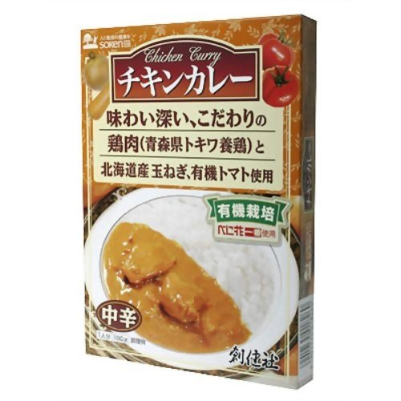

チキンカレー
「創健社 チキンカレー(レトルト) 180g」は、鶏肉は遺伝子組み換えをせず、ポストハーベストもないトウモロコシと大豆を使用した、自家配合飼料で丹精込めて育て上げた、トキワ養鶏の鶏肉を使用。しっかりとした味わい豊かな鶏肉です。
価格
一袋(180g入り) 380円
取扱い店舗
アルペン駅前店
皆さんの声
ダルシム(108才)：आसीन्मद्रेषु पार्थिवो दक्षः